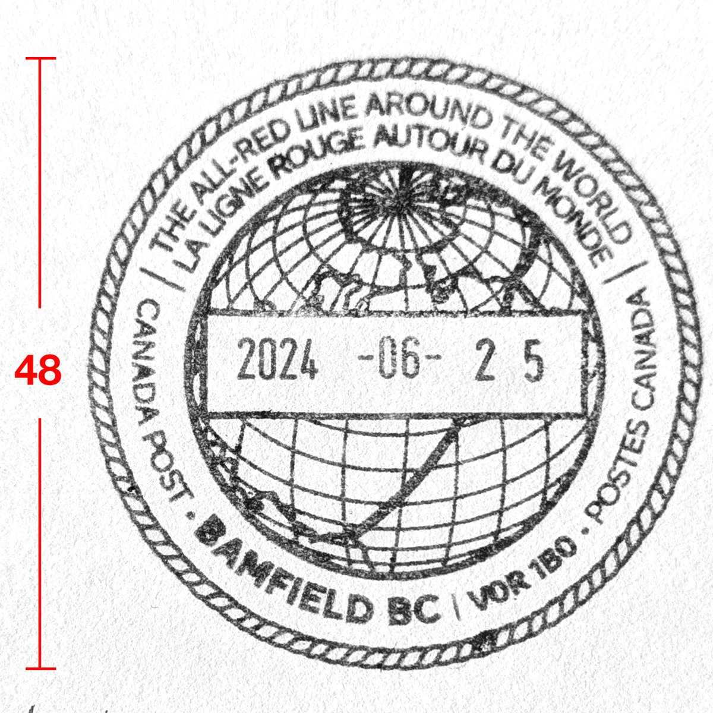

Bamfield PO pictorial cancel
The All-Red Line Around the World – la Ligne Rouge Autour du Monde
- Status
- Active
- Run dates
- 2023-10-01 to 2034-12-31
- Design
- "THE ALL-RED LINE AROUND THE WORLD / LA LIGNE ROUGE AUTOUR DU MONDE"; globe, map
- Ink colour
- Black
- Designer
- Unknown
- Post office
- Bamfield PO
General delivery
Bamfield, BC
V0R 1B0 - Subjects
- globe, map, geography
Collect it by mail. Send your stamped covers, with a stamped return envelope, to the post office address above. How to collect pictorial cancels by mail · en français
 Duncan STN MainTotem
Duncan STN MainTotem Sooke STN MainFalls
Sooke STN MainFalls Sooke STN MainTrees
Sooke STN MainTrees